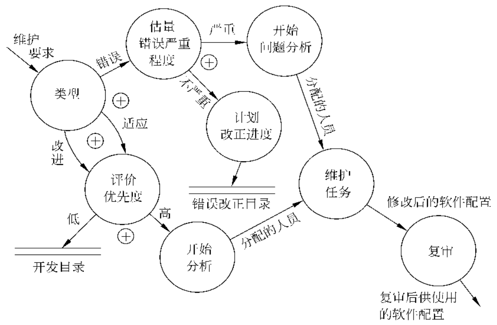
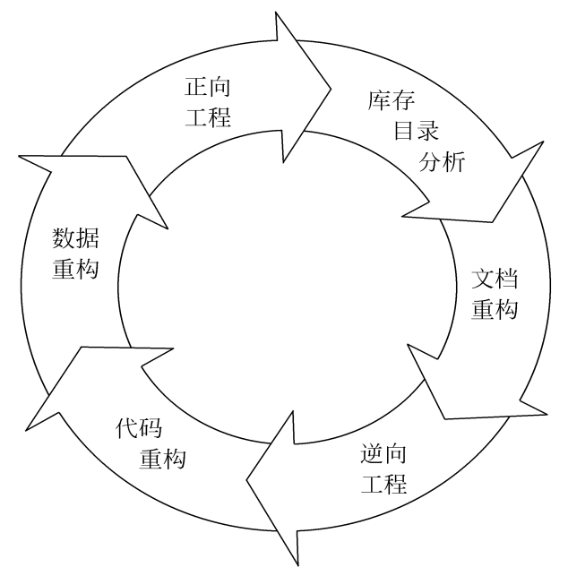

第8章 维护
在软件产品被开发出来并交付用户使用之后，就进入了软件的运行维护阶段。
软件工程的目的是要提高软件的可维护性，减少软件维护所需要的工作量，降低软件系统的总成本。
软件维护的定义
软件维护就是在软件已经交付使用之后，为了改正错误或满足新的需要而修改软件的过程。
软件维护的四项活动：
- 改正性维护：诊断和改正错误的过程。
- 适应性维护：为了和变化了的环境适当地配合而进行的修改软件的活动。
- 完善性维护：在使用软件的过程中，用户往往提出增加新功能或修改已有功能的建议，还可能提出一般性的改进意见，为了满足这类要求而修改软件的活动。
- 预防性维护：为了改进未来的可维护性或可靠性，而主动地修改软件。
软件维护的特点
结构化维护与非结构化维护差别巨大
1. 非结构化维护
非结构化维护需要付出很大代价(浪费精力并且遭受挫折的打击)，这种维护方式是没有使用良好定义的方法学开发出来的软件的必然结果。
2. 结构化维护
以完整的软件配置为基础的结构化维护，是在软件开发过程中应用软件工程方法学的结果。虽然有了软件的完整配置并不能保证维护中没有问题，但是确实能减少精力的浪费并且能提高维护的总体质量。
维护的带价高昂
维护的问题很多
软件维护的过程
维护过程本质上是修改和压缩了的软件定义和开发过程，而且事实上远在提出一项维护要求之前，与软件维护有关的工作已经开始了。
首先必须建立一个维护组织，随后必须确定报告和评价的过程，而且必须为每个维护要求规定一个标准化的事件序列。此外，还应该建立一个适用于维护活动的记录保管过程，并且规定复审标准。
1. 维护组织
2. 维护报告
3. 维护的事件流
不管维护类型如何，都需要进行同样的技术工作。这些工作包括修改软件设计、复查、必要的代码修改、单元测试和集成测试(包括使用以前的测试方案的回归测试)、验收测试和复审。

4. 保存维护记录
5. 评价维护活动
软件的可维护性
可以把软件的可维护性定性地定义为： 维护人员理解、改正、改动或改进这个软件的难易程度。
决定软件可维护性的因素
1. 可理解性
软件可理解性表现为外来读者理解软件的结构、功能、接口和内部处理过程的难易程度。模块化（模块结构良好，高内聚，松耦合）、详细的设计文档、结构化设计、程序内部的文档和良好的高级程序设计语言等等，都对提高软件的可理解性有重要贡献。
2. 可测试性
诊断和测试的容易程度取决于软件容易理解的程度。良好的文档对诊断和测试是至关重要的，此外，软件结构、可用的测试工具和调试工具，以及以前设计的测试过程也都是非常重要的。维护人员应该能够得到在开发阶段用过的测试方案，以便进行回归测试。在设计阶段应该尽力把软件设计成容易测试和容易诊断的。
3. 可修改性
软件容易修改的程度和设计原理及启发规则直接有关。模块化、耦合、内聚、信息隐藏等等，都影响软件的可修改性。
4. 可移植性
软件可移植性指的是，把程序从一种计算环境（硬件配置和操作系统）转移到另一种计算环境的难易程度。
5. 可重用性
重用（reuse）是指同一事物不做修改或稍加改动就在不同环境中多次重复使用。
大量使用可重用的软件构件来开发软件，可以从下述两个方面提高软件的可维护性：
- 通常，可重用的软件构件在开发时经过很严格的测试，可靠性比较高，且在每次重用过程中都会发现并清除一些错误，随着时间推移，这样的构件将变成无错误的。因此，软件中使用的可重用构件越多，软件的可靠性越高，改正性维护需求越少。
- 很容易修改可重用的软件构件使之再次应用在新环境中，因此，软件中使用的可重用构件越多，适应性和完善性维护也就越容易。
文档
文档是影响软件可维护性的决定因素。由于长期使用的大型软件系统在使用过程中必然会经受多次修改，所以文档比程序代码更重要。
软件系统的文档可以分为用户文档和系统文档两类。用户文档主要描述系统功能和使用方法，并不关心这些功能是怎样实现的；系统文档描述系统设计、实现和测试等各方面的内容。
总的说来，软件文档应该满足下述要求：
- 必须描述如何使用这个系统，没有这种描述时即使是最简单的系统也无法使用
- 必须描述怎样安装和管理这个系统
- 必须描述系统需求和设计
- 必须描述系统的实现和测试，以便使系统成为可维护的
可维护性复审
可维护性是所有软件都应该具备的基本特点，在软件工程过程的每一个阶段都应该考虑并努力提高软件的可维护性，在每个阶段结束前的技术审查和管理复审中，应该着重对可维护性进行复审。
在测试结束时进行最正式的可维护性复审，这个复审称为配置复审。配置复审的目的是保证软件配置的所有成分是完整的、一致的和可理解的，而且为了便于修改和管理已经编目归档了。
维护应该针对整个软件配置，不应该只修改源程序代码。当对源程序代码的修改没有反映在设计文档或用户手册中时，就会产生严重的后果。
预防性维护
预防性维护方法是由Miller提出来的，他把这种方法定义为：“把今天的方法学应用到昨天的系统上，以支持明天的需求。”
粗看起来，在一个正在工作的程序版本已经存在的情况下重新开发一个大型程序，似乎是一种浪费。其实不然，下述事实很能说明问题：
- 维护一行源代码的代价可能是最初开发该行源代码代价的14~40倍
- 重新设计软件体系结构（程序及数据结构）时使用了现代设计概念，它对将来的维护可能有很大的帮助
- 由于现有的程序版本可作为软件原型（现在正在工作的程序）使用，开发生产率可大大高于平均水平
- 用户具有较多使用该软件的经验，因此，能够很容易地搞清新的变更需求和变更的范围
- 利用逆向工程和再工程的工具，可以使一部分工作自动化
- 在完成预防性维护的过程中可以建立起完整的软件配置（文档、程序和数据）
软件再工程过程
预防性维护实质上是软件再工程。
典型的软件再工程过程模型如图所示，该模型定义了6类活动。在某些情况下这些活动以线性顺序发生，但也并非总是这样，例如，为了理解某个程序的内部工作原理，可能在文档重构开始之前必须先进行逆向工程。
在图中显示的再工程范型是一个循环模型。这意味着作为该范型的组成部分的每个活动都可能被重复，而且对于任意一个特定的循环来说，过程可以在完成任意一个活动之后终止。

1. 库存目录分析
对库中每个程序都做逆向工程或再工程是不现实的。
下述3类程序有可能成为预防性维护的对象：
- 预定将使用多年的程序；
- 当前正在成功地使用着的程序；
- 在最近的将来可能要做重大修改或增强的程序。
应该仔细分析库存目录，按照业务重要程度、寿命、当前可维护性、预期的修改次数等标准，把库中的应用系统排序，从中选出再工程的候选者，然后明智地分配再工程所需要的资源。
2. 文档重构
老程序固有的特点是缺乏文档。具体情况不同，处理这个问题的方法也不同：
- 如果一个程序是相对稳定的，正在走向其有用生命的终点，而且可能不会再经历什么变化，那么，让它保持现状是一个明智的选择
- 为了便于今后的维护，必须更新文档，但是由于资源有限，应采用“使用时建文档”的方法，也就是说，不是一下子把某应用系统的文档全部都重建起来，而是只针对系统中当前正在修改的那些部分建立完整文档
- 如果某应用系统是完成业务工作的关键，而且必须重构全部文档，则仍然应该设法把文档工作减少到必需的最小量
3. 逆向工程
软件的逆向工程是分析程序以便在比源代码更高的抽象层次上创建出程序的某种表示的过程，也就是说，逆向工程是一个恢复设计结果的过程。
4. 代码重构
某些老程序具有比较完整、合理的体系结构，但是，个体模块的编码方式却是难于理解、测试和维护的。在这种情况下，可以重构这些模块的代码。
通常，重构并不修改整体的程序体系结构，它仅关注个体模块的设计细节以及在模块中定义的局部数据结构。如果重构扩展到模块边界之外并涉及软件体系结构，则重构变成了正向工程。
5. 数据重构
对数据体系结构差的程序很难进行适应性修改和增强，数据体系结构比源代码本身对程序的长期生存力有更大影响。
数据重构是一种全范围的再工程活动。数据结构对程序体系结构及程序中的算法有很大影响，对数据的修改必然会导致体系结构或代码层的改变。
6. 正向工程
正向工程也称为革新或改造。正向工程过程应用软件工程的原理、概念、技术和方法来重新开发某个现有的应用系统。在大多数情况下，被再工程的软件不仅重新实现现有系统的功能，而且加入了新功能和提高了整体性能。